У даній лабораторній роботі ми придбали практичні навички підключення до СКБД, вибора бази даних, виконання запиту, отримання результатів, відключення від СКБД.
Звіти з лабораторних робіт
з дисципліни «Основи розробки програмного front-end та backend застосувань»
Роботу виконали студенти групи ІА-93
Start
У даній лабораторній роботі ми придбали практичні навички підключення до СКБД, вибора бази даних, виконання запиту, отримання результатів, відключення від СКБД.
Тема: ВЗАЄМОДІЯ WEB-ЗАСТОСУВАНЬ З СИСТЕМОЮ КЕРУВАННЯ БАЗАМИ ДАНИХ (СКБД). ОБРОБКА РЕЗУЛЬТАТІВ SQL-ЗАПИТІВ У PHP-СЦЕНАРІЇ.
Мета: придбати практичні навички підключення до СКБД, вибора бази даних, виконання запиту, отримання результатів, відключення від СКБД
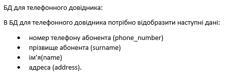
Так, як основною сутністю в БД для телефонного довідника є номер телефону,то було вирішено обрати саме такі атрибути, які би могли надати інформацію про власника за допомогою номеру телефону.
Інфологічна модель:
При описі інфологічної моделі необхідно особливо звернути увагу, чи наявні атрибути, що змогли б повністю ідентифікувати конкретний екземпляр сутності, як наприклад, унікальний ідентифікатор. У нашому випадку атрибути такої властивості не мають тому вводимо додатковий id («Ідентифікатор»)
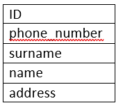
При переході до даталогічної моделі виникають проблеми, оскільки атрибут Номер телефону несе в собі транзитивну властивість.Тому створимо окрему таблицю "Номери телефону" з атрибутами ID та Номер телефону(phone_number), і будемо посилатись на цю таблицю із таблиці Телефонний довідник за допомогою атрибуту phone_number_id.
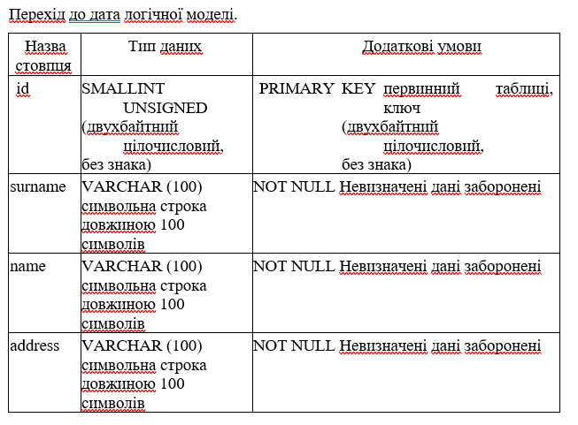
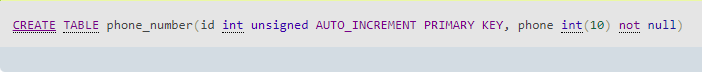
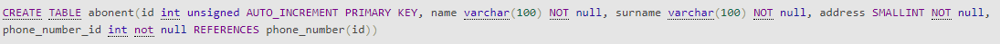
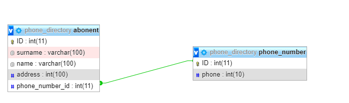
Внесення та вибірка елементів із БД:
Внесення даних в БД
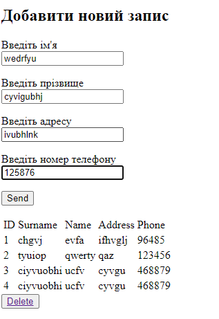Результат внесення на сторінці
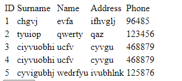Результат внесення в phpMyAdmin
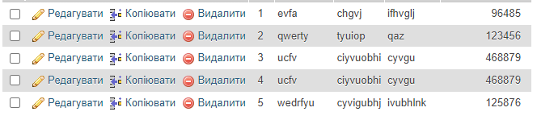Видалення даних з БД
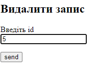Результат видалення на сторінці
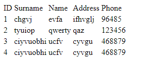Результат видалення з phpMyAdmin
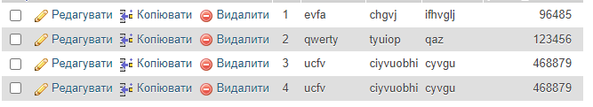